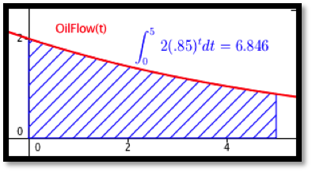
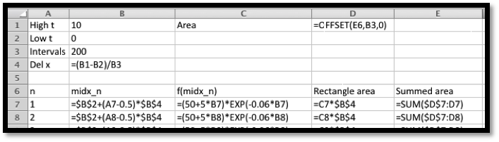
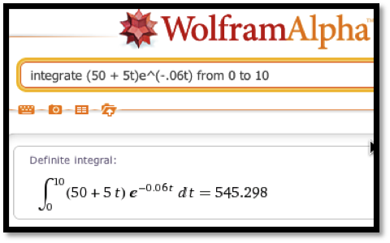
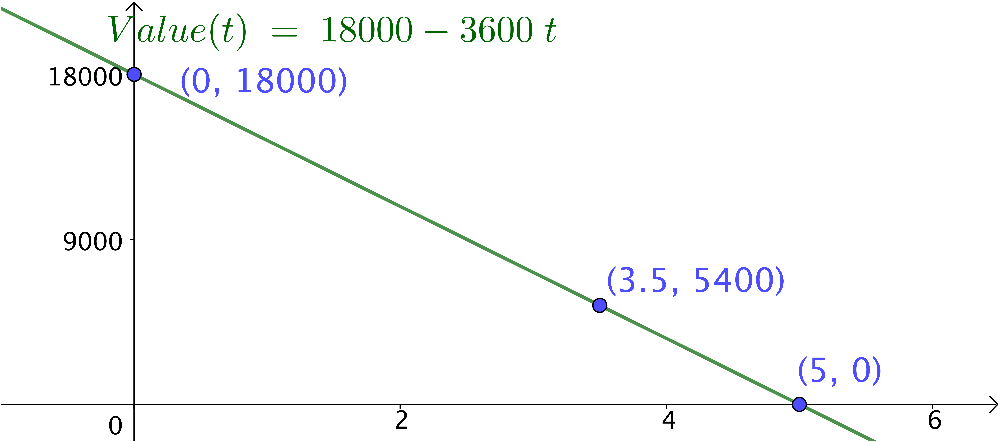
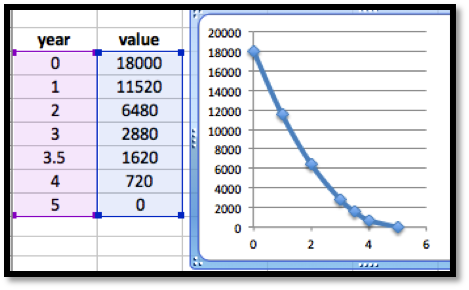
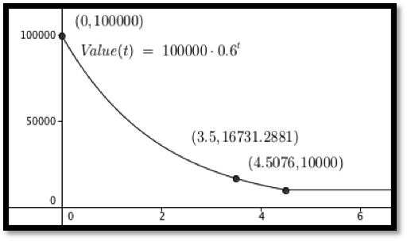
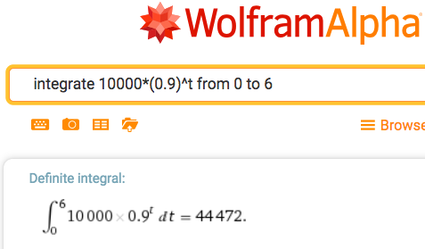
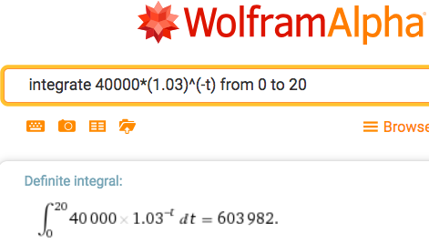

Having looked at several ways to evaluate definite integrals, we return to practical problems that we can solve be evaluating an integral. We will break our applications in this section into two groups. Problems in the first group reduce to accumulation over time, and are analogous to finding the area under a curve, or finding a definite integral. Problems in the second group ask you to find a specific anti-derivative of a function. They are called boundary value problems.
Subsection7.7.1Basic Accumulation
The most straightforward problem for integration is one where I have a function for some value, like an income stream, or materials produced, or a cost, and I am interested if calculating how much accumulates in a specified interval. We work through a series of examples where the accumulation function gets progressively more complicated.
Example7.7.1.Accumulating a constant function over time.
Mary runs a small shop that is temporarily disconnected from the power network. A generator that provides power uses 2 gallons of fuel per hour. How much fuel does she need to keep the shop running from 8 in the morning until 6 in the afternoon.
Solution.
We started with a problem that is easy to do without calculus to give us confidence in our method. We solve it with algebra first. Mary wants to run the generator for 10 hours and it consumes 2 gallons of fuel per hour. She needs (10 hours)(2 gallons/hour) = 20 gallons of fuel.
To set the problem up for calculus, we use a 24-hour clock to put time on a number line. We are accumulating \(\text{FuelConsumption}(t)=2\) from \(t=8\) to \(t=18\text{.}\) We need
Find the increase in cost as production goes from 50,000 to 80,000.
Solution.
Since the change in cost looks like a Riemann sum with 30,000 intervals, we will approximate the change in cost with the integral of the marginal cost. With this function we can easily find an antiderivative and evaluate. The change in cost is
An oil well in Texas initially produces oil at a rate of 2 million barrels of oil per year. The production rate will typically fall 15% per year. How much oil is produced over a 5-year period?
Solution.
We want to integrate our production rate of \(2(0.85)^t\) as \(t\) goes from 0 to 5. We can use our antidifferentiation formulas for this problem.
Over 5 years, the well will produce 6.846 million barrels of oil.

Example7.7.4.Discounted revenue stream.
Your company is interested in acquiring a revenue stream that is currently producing are a rate of \(50+5 t\) thousand dollars per year, where t is measured in years. To obtain current value, you are discounting at a rate of 6% per year compounded continuously. What is the current value of the first 10 years of income from the stream?
Solution.
To find the total income we would want to integrate \((50+5t)\) as \(t\) goes from 0 to 10. To find the current value we must discount the income based in when we receive it. Thus we want to integrate \((50+5t) e^{-0.06t}\) as \(t\) goes from 0 to 10. We set up the integral \(\int_0^{10} (50+5t) e^{-0.06t} dt\text{.}\) Since we do not know how to find the anti-derivative for this function, we find the area either with Excel and Riemann sums, or with Wolfram Alpha.

With either method, we find that the present value of the revenue stream to be $545,298.

Subsection7.7.2Boundary value problems
The accumulation problems asked you to find the area under a curve between two specific points. For those problems, we are not interested in a formulation of a general area function. A second set of applications starts with a derivative and is interested in finding the particular anti-derivative that meets certain initial conditions. (We use the conditions to find the correct value of "+C" in the general anti-derivative.) These problems are often solved once to find the general anti-derivative for a particular kind of problem, and the general solution is then used as a formula to find the constant \(C\text{.}\)
Example7.7.5.Proportional growth and continuous reinvestment.
I put $20,000 in a retirement account that earns 4% interest compounded continuously. I reinvest all my earnings from the account back into the retirement account. I would like a simple formula for the principal at sometime in the future.
Solution.
We already have the formula for continuous growth, but it is worthwhile to derive it again. We are told
This is the formula we took on faith in the last chapter.
Subsection7.7.3Depreciation
When computing costs of a business, we need to evaluate the depreciation cost of capital equipment. There are a number of reasonable ways of computing depreciation.
Straight-line depreciation.
Assumes that a piece of equipment loses the same amount of value each year until it is worthless.
\begin{equation*}
\text{Annual Depreciation Expense} = \frac{\text{Cost of fixed Asset} - \text{Residual Value}}{\text{Useful life of Asset (in years)}}
\end{equation*}
The sum of digits method of depreciation.
Assumes the rate of depreciation is proportional to the expected remaining useful life of the piece of equipment. For example with a sum of years method and defining \(V(t)\) as the value, EL is the expected lifetime, \(k\) is a constant, and \(t\) is time, we would have:
This method assumes the rate of depreciation is proportional to the current value, with the initial rate of depreciation twice the straight-line rate, with depreciation stopping when the value is the scrap value. We let \(N\) be the estimated life of the asset and we let the rate of depreciation be:
\begin{equation*}
\text{Depreciation rate}=1- \sqrt[N]{\frac{\text{residual value}}{\text{cost of fixed asset}}}
\end{equation*}
Example7.7.6.Straight Line Depreciation.
You buy a car for $18,000 and you want to depreciate it to $0 over 5 years. Find a formula for the value of the car. We assume the value decreases a constant rate, so we use straight-line depreciation. Give a simple formula to find the book value of the equipment after 3.5 years.
Solution.
The easiest way to do this problem is not to use calculus, but to realize we want the equation of a line and we have two points.
\begin{equation*}
\val(0)=18000 \text{ and } \val(5)=0\text{.}
\end{equation*}
Taking slope as rise over run, the slope is \(-3,600\) and the intercept is 18,000. Thus our equation is
Thus, straight-line depreciation gives a value function, which is a straight line. We now plug in known values to find the constants. We plug in for \(\Time = 0\) to see \(C = 18,000\text{.}\) We plug in for \(\Time = 5\) to see \(k = 3.600\text{.}\) This gives us the same equation using calculus as we obtained using algebra. The book value of the equipment at 3.5 years is $5,400 with this method of depreciation.

Example7.7.7.Sum of years method.
After buying the same car from the example above, we assume that the depreciation is proportional to the amount of useful life that the equipment has left. (A car loses more value in its first year than in its last year of life.) Produce an equation for the book value of the same $18,000 car with this method.
Solution.
We start with the observation that we are given that \(V' (t)=-k(\text{EL}-t)\) for some constant \(k\text{,}\) and we know that \(V(0)=18,000\) and \(V(5)=0\text{.}\)
With an expected lifetime of 5, integrating the first equation gives
Thus the sum of years method gives a value function which is quadratic. Once again, we plug in known points to find the constants. We plug in for time = 0 to see \(C = 18,000\text{.}\) We plug in for time = 5 and get
The book value at 3.5 years is $1,620 with this method of depreciation.

Example7.7.8.Declining Balance depreciation.
This method of depreciation says an item loses value in proportion to its current value. The standard method uses a rate that is twice the rate of straight-line depreciation until we reach scrap value, when depreciation stops. Use this method to find the book value of our $100,000 piece of equipment at 3.5 years if the scrap value is $10,000 and the useful life is 5 years.
Solution.
In Example 7.7.5 we saw that proportional growth or decay give an exponential function. The basic value function is
Since 3.5 is less than 4.5 years, the equipment is still depreciating. Its book value is \(100,000*(0.6)^{3.5} = \$16,731\text{.}\)

Reading Questions7.7.4Reading Check
1.Reading check, Applications of the Integral, Investment and Depreciation.
This question checks your reading comprehension of the material is section 7.7, Applications of the Integral, Investment and Depreciation, of Business Calculus with Excel. Based on your reading, select all statements that are correct. There may be more than one correct answer. The statements may appear in what seems to be a random order.
If we can set up the integral of an application, we can use CAS to evaluate the integral.
We can accumulate marginal cost over time to find change in cost.
This section explained how to use calculus to predict the future value of the stock market.
to find the current value of a revenue stream we take the integral of the revenue stream times a discounting functions that represents how much a future payment is worth today.
Accumulating a function over time is simply taking a definite integral.
The example on oil production took the integral of an exponential function.
None of the above
Exercises7.7.5Exercises: Applications of the integral: Investment and depreciation Problems
Find the estimated total sales over the first 200 days.
5.
The production from an oil well starts at a rate of 10,000 barrels per year and declines exponentially at a rate of 10% per year. How much is produced in 6 years?
Solution.
We expect 44,472 barrels of oil over the 6 years.

6.
An oil well is producing 15,000 barrels per year. The rate of production is continuously declining at a rate of 10% per year. The well will be capped as unproductive when it produces 3,000 barrels per year. How much will it produce before being capped?
7.
A stream of revenue produces at a rate of $40,000 per year. We assume that the risk free investment rate is 3% per year. What is the current value of the revenue stream over 20 years?
Solution.
We evaluate the revenue stram to be worth $603,982.

8.
A stream of revenue produces at a rate of \($40,000+$2,000t\) dollars per year with \(t\) measured in years. We assume that the risk free investment rate is 3% per year. What is the current value of the revenue stream over 20 years?